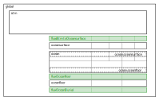

PALEOocean Domains, fluxes, and standard Variables

Figure 1
Ocean Domains, subDomains, and fluxes. Compare to full Earth system Domains https://paleotoolkit.github.io/PALEOcopse.jl/dev/COPSE_Domains
Domains
The standard Domain configuration for an atmosphere-ocean model is shown in Figure 1.
global This is used for model-wide quantities, typically global budgets and global forcings
atmosphere A scalar (0-D) Domain with atmospheric variables and Reactions
ocean The
oceanDomain represents a 3-D ocean as a vector of cells, with geometry and internal transport defined by an OceanTransport Reaction.oceansurface, oceanfloor
oceansurfaceandoceanfloorrepresent 2-D boundaries as a vector of cells, with geometry defined by the OceanTransport Reaction. There is a 1-to-1 correspondence between the cells in the 2-DoceansurfaceDomain, the adjacentoceansurface cells defined by theocean.oceansurfacesubdomain. Similarly, there is a 1-to-1 correspondence between the cells in the 2-DoceanfloorDomain, the adjacentoceanfloor cells defined by theocean.oceanfloorsubdomain.
Fluxes
Flux Domains are used to hold exchange fluxes in Variables defined by FluxTarget Reactions, see https://paleotoolkit.github.io/PALEOboxes.jl/stable/DesignOverview/#Coupling-Spatial-Domains
fluxAtmtoOceansurface Air-sea exchange fluxes are defined in the 2-D
fluxAtmtoOceansurfaceDomain, which contains cells with a 1-to-1 correspondence to theoceansurfaceDomain.fluxOceanfloor Particulate fluxes from ocean to oceanfloor, and solute exchange fluxes between ocean and oceanfloor, are defined in the 2-D
fluxOceanfloorDomain. This contains cells with a 1-to-1 correspondence to cells in theoceanfloorDomain.fluxOceanBurial Ocean burial fluxes are defined in the 2-D
fluxOceanburialDomain. This contains cells with a 1-to-1 correspondence to cells in theoceanfloorDomain.
Standard Variables
(see Skeleton ocean-atmosphere configuration)
julia> include("PALEO_examples_oceanskeleton.jl")show(PB.show_variables(model); allrows=true, allcols=true, eltypes=false, show_row_number=false)48×8 DataFrame
domain name type units vfunction space field_data description
─────────────────────────────────────────────────────────────────────────────────────────────────────────────────────────────────────────────────────────────────────
fluxAtmtoOceansurface flux_CO2 VariableDomContribTarget mol yr-1 VF_Undefined CellSpace IsotopeLinear flux input
fluxAtmtoOceansurface flux_O2 VariableDomContribTarget mol yr-1 VF_Undefined CellSpace ScalarData flux input
fluxAtmtoOceansurface flux_total_CO2 VariableDomPropDep mol yr-1 VF_Undefined ScalarSpace IsotopeLinear total flux input
fluxAtmtoOceansurface flux_total_O2 VariableDomPropDep mol yr-1 VF_Undefined ScalarSpace ScalarData total flux input
fluxOceanBurial flux_Ccarb VariableDomContribTarget mol yr-1 VF_Undefined CellSpace IsotopeLinear flux input
fluxOceanBurial flux_Corg VariableDomContribTarget mol yr-1 VF_Undefined CellSpace IsotopeLinear flux input
fluxOceanBurial flux_P VariableDomContribTarget mol yr-1 VF_Undefined CellSpace ScalarData flux input
fluxOceanBurial flux_PFe VariableDomContribTarget mol yr-1 VF_Undefined CellSpace ScalarData flux input
fluxOceanBurial flux_Pauth VariableDomContribTarget mol yr-1 VF_Undefined CellSpace ScalarData flux input
fluxOceanBurial flux_Porg VariableDomContribTarget mol yr-1 VF_Undefined CellSpace ScalarData flux input
fluxOceanBurial flux_total_Ccarb VariableDomPropDep mol yr-1 VF_Undefined ScalarSpace IsotopeLinear total flux input
fluxOceanBurial flux_total_Corg VariableDomPropDep mol yr-1 VF_Undefined ScalarSpace IsotopeLinear total flux input
fluxOceanBurial flux_total_P VariableDomPropDep mol yr-1 VF_Undefined ScalarSpace ScalarData total flux input
fluxOceanBurial flux_total_PFe VariableDomPropDep mol yr-1 VF_Undefined ScalarSpace ScalarData total flux input
fluxOceanBurial flux_total_Pauth VariableDomPropDep mol yr-1 VF_Undefined ScalarSpace ScalarData total flux input
fluxOceanBurial flux_total_Porg VariableDomPropDep mol yr-1 VF_Undefined ScalarSpace ScalarData total flux input
fluxOceanfloor particulateflux_Ccarb VariableDomContribTarget mol yr-1 VF_Undefined CellSpace IsotopeLinear flux input
fluxOceanfloor particulateflux_Corg VariableDomContribTarget mol yr-1 VF_Undefined CellSpace IsotopeLinear flux input
fluxOceanfloor particulateflux_N VariableDomContribTarget mol yr-1 VF_Undefined CellSpace ScalarData flux input
fluxOceanfloor particulateflux_P VariableDomContribTarget mol yr-1 VF_Undefined CellSpace ScalarData flux input
fluxOceanfloor particulateflux_total_Ccarb VariableDomPropDep mol yr-1 VF_Undefined ScalarSpace IsotopeLinear total flux input
fluxOceanfloor particulateflux_total_Corg VariableDomPropDep mol yr-1 VF_Undefined ScalarSpace IsotopeLinear total flux input
fluxOceanfloor particulateflux_total_N VariableDomPropDep mol yr-1 VF_Undefined ScalarSpace ScalarData total flux input
fluxOceanfloor particulateflux_total_P VariableDomPropDep mol yr-1 VF_Undefined ScalarSpace ScalarData total flux input
fluxOceanfloor soluteflux_DIC VariableDomContribTarget mol yr-1 VF_Undefined CellSpace IsotopeLinear flux input
fluxOceanfloor soluteflux_O2 VariableDomContribTarget mol yr-1 VF_Undefined CellSpace ScalarData flux input
fluxOceanfloor soluteflux_P VariableDomContribTarget mol yr-1 VF_Undefined CellSpace ScalarData flux input
fluxOceanfloor soluteflux_TAlk VariableDomContribTarget mol yr-1 VF_Undefined CellSpace ScalarData flux input
fluxOceanfloor soluteflux_total_DIC VariableDomPropDep mol yr-1 VF_Undefined ScalarSpace IsotopeLinear total flux input
fluxOceanfloor soluteflux_total_O2 VariableDomPropDep mol yr-1 VF_Undefined ScalarSpace ScalarData total flux input
fluxOceanfloor soluteflux_total_P VariableDomPropDep mol yr-1 VF_Undefined ScalarSpace ScalarData total flux input
fluxOceanfloor soluteflux_total_TAlk VariableDomPropDep mol yr-1 VF_Undefined ScalarSpace ScalarData total flux input
ocean Abox VariableDomPropDep m^2 VF_Undefined CellSpace ScalarData horizontal area of box
ocean pressure VariableDomPropDep dbar VF_Undefined CellSpace ScalarData Ocean pressure
ocean rho VariableDomPropDep kg m^-3 VF_Undefined CellSpace ScalarData physical ocean density
ocean rho_ref VariableDomPropDep kg m^-3 VF_Undefined CellSpace ScalarData Ocean transport model density co…
ocean sal VariableDomPropDep psu VF_Undefined CellSpace ScalarData Ocean salinity
ocean temp VariableDomPropDep K VF_Undefined CellSpace ScalarData Ocean temperature
ocean volume VariableDomPropDep m^3 VF_Undefined CellSpace ScalarData volume of ocean cells
ocean volume_total VariableDomPropDep m^3 VF_Undefined ScalarSpace ScalarData total volume of ocean cells
ocean zlower VariableDomPropDep m VF_Undefined CellSpace ScalarData depth of lower surface of box (m)
ocean zmid VariableDomPropDep m VF_Undefined CellSpace ScalarData mean depth of box
ocean zupper VariableDomPropDep m VF_Undefined CellSpace ScalarData depth of upper surface of box (m…
oceanfloor Afloor VariableDomPropDep m^2 VF_Undefined CellSpace ScalarData horizontal area of seafloor at b…
oceanfloor Afloor_total VariableDomPropDep m^2 VF_Undefined ScalarSpace ScalarData total area of seafloor
oceanfloor zfloor VariableDomPropDep m VF_Undefined CellSpace ScalarData depth of ocean floor (m, -ve)
oceansurface Asurf VariableDomPropDep m^2 VF_Undefined CellSpace ScalarData horizontal area of oceansurface
oceansurface open_area_fraction VariableDomPropDep VF_Undefined CellSpace ScalarData fraction of area open to atmosph…ocean, oceansurface, and oceanfloor Variables are standard grid variables, provided by the ocean transport Reaction (a ReactionOceanTransport3box in this case).
Flux target Variables to accumulate exchange fluxes are provided by ReactionFluxTarget Reactions, the illustrative configuration here defines fluxes for a C, O, P model with atmospheric state variables CO2, O2, and ocean state variables including DIC, TAlk, O2 and P.